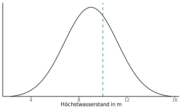

Lösungen der Übungsaufgaben
Sitzung 1
7.3.9 Lösung1-3
| Variable | Skalenniveau | Variablentyp | Anmerkungen | |
|---|---|---|---|---|
| a) | Lebensalter in Jahren | Verhältnisskala | diskret | ganze Zahlen vorausgesetzt |
| b) | Regenmenge in mm | Verhältnisskala | stetig | |
| c) | Güteklasse | Ordinalskala | qualitativ | |
| d) | Passagieraufkommen | Verhältnisskala | diskret | |
| e) | Baujahr | Intervallskala | diskret | |
| f) | Geschwindigkeit in km/h | Verhältnisskala | stetig | bei ganzzahligen Werten: diskret |
| g) | Sozialstatus (Unter-, Mittel und Oberschicht) | Ordinalskala | qualitativ | |
| h) | Temperatur in °F | Intervallskala | stetig | |
| i) | Fläche eines Bundeslands in km | Verhältnisskala | stetig | |
| j) | Temperatur in K | Verhältnisskala | stetig | 0 K ist ein natürlicher Nullpunkt |
| k) | Einwohnerzahl | Verhältnisskala | diskret | |
| l) | Pegelstand | Intervallskala | stetig | willkürlicher Nullpunkt |
| m) | Staatsangehörigkeit | Nominalskala | qualitativ | |
| n) | Interesse an Statistik (gering bis hoch) | Ordinalskala | qualitativ | |
| o) | Klausurnote | Ordinalskala | qualitativ | wird jedoch oft metrisch verwendet |
| p) | Bodentyp | Nominalskala | qualitativ | |
| q) | Entfernung zum Stadtzentrum in km | Verhältnisskala | stetig | |
| r) | Körpergr칬른 | Verhältnisskala | stetig | |
| s) | Kleidergr칬른 (S bis XXL) | Ordinalskala | qualitativ | |
| t) | Monatliches Nettoeinkommen | Verhältnisskala | stetig | oder diskret für Cent-Beträge |
7.3.10 Lösung1-4
7.3.10.1 a)
Die Werte sind im Bereich zwischen 3 und 210 Stunden. Eine Klassengr칬른 von 25 Stunden bietet sich an, es sind jedoch auch andere Gr칬른n denkbar. Da die Variable diskret zu sein scheint, können die Klassengrenzen als ganze Zahlen angegeben werden.
| Wert \(x_i\) | Häufigkeit \(f_i\) |
|---|---|
| von 0 bis unter 25 h | 9 |
| von 25 bis unter 50 h | 5 |
| von 50 bis unter 75 h | 2 |
| von 75 bis unter 100 h | 3 |
| von 100 bis unter 125 h | 1 |
| von 125 bis unter 150 h | 1 |
| von 150 bis unter 175 h | 0 |
| von 175 bis unter 200 h | 2 |
| von 200 bis unter 225 h | 1 |
7.3.10.2 b)
Das Resultat sollte je nach gewählter Klassengr칬른 in etwa so aussehen:

7.3.10.3 c)
Die Verteilung ist unregelm칛를g abfallend.
7.3.11 Lösung1-5
Sind die folgenden Aussagen wahr oder unwahr?
- wahr
- wahr
- unwahr
- wahr
- unwahr
- unwahr
- wahr
- wahr
- unwahr
- unwahr
- wahr
- wahr
- unwahr
- unwahr
- unwahr
- wahr
- wahr
- wahr
Sitzung 2
7.3.12 Lösung2-1
7.3.12.1 a)
| Schritt | Lösung |
|---|---|
| Formel | \(\bar{x}=\frac{\sum\limits_{i=1}^{n}x_{i}}{n}\) |
| Einsetzen | \(\bar{x}=\frac{356}{6}\) |
| Ergebnis | \(\bar{x}=59{,}33\) |
7.3.12.2 b)
| Schritt | Lösung |
|---|---|
| Formel | \(\bar{x}=\frac{\sum\limits_{i=1}^{n}x_{i}}{n}\) |
| Einsetzen | \(\bar{x}=\frac{2{,}075}{8}\) |
| Ergebnis | \(\bar{x}=0{,}26\) |
7.3.12.3 c)
| Schritt | Lösung |
|---|---|
| Formel | \(\bar{x}=\frac{\sum\limits_{i=1}^{n}x_{i}}{n}\) |
| Einsetzen | \(\bar{x}=\frac{8350{,}16}{10}\) |
| Ergebnis | \(\bar{x}=835{,}02\) |
7.3.13 Lösung2-2
7.3.13.1 a)
| Schritt | Lösung |
|---|---|
| Varianz: Formel | \(s^2=\frac{\sum\limits_{i=1}^{n}(x_{i}-\bar{x})^2}{n-1}\) |
| Varianz: Einsetzen | \(s^2=\frac{1229{,}333}{5}\) |
| Varianz: Ergebnis | \(s^2=245{,}87\) |
| Standardabweichung: Formel | \(s=\sqrt{s^2}\) |
| Standardabweichung: Einsetzen | \(s=\sqrt{245{,}87}\) |
| Varianz: Ergebnis | \(s\approx15{,}68\) |
7.3.13.2 b)
| Schritt | Lösung |
|---|---|
| Varianz: Formel | \(s^2=\frac{\sum\limits_{i=1}^{n}(x_{i}-\bar{x})^2}{n-1}\) |
| Varianz: Einsetzen | \(s^2=\frac{1{,}632935}{7}\) |
| Varianz: Ergebnis | \(s^2=0{,}23\) |
| Standardabweichung: Formel | \(s=\sqrt{s^2}\) |
| Standardabweichung: Einsetzen | \(s=\sqrt{0{,}23}\) |
| Varianz: Ergebnis | \(s\approx0{,}48\) |
7.3.13.3 c)
| Schritt | Lösung |
|---|---|
| Varianz: Formel | \(s^2=\frac{\sum\limits_{i=1}^{n}(x_{i}-\bar{x})^2}{n-1}\) |
| Varianz: Einsetzen | \(s^2=\frac{95338{,}94}{9}\) |
| Varianz: Ergebnis | \(s^2=10593{,}21\) |
| Standardabweichung: Formel | \(s=\sqrt{s^2}\) |
| Standardabweichung: Einsetzen | \(s=\sqrt{10593{,}21}\) |
| Varianz: Ergebnis | \(s\approx102{,}92\) |
7.3.14 Lösung2-3
7.3.14.1 a)
Die geordnete Liste ist:
1 1 1 2 2 2 2 3 3 4 4 5 7Für das arithmetische Mittel und die Varianz ist diese Tabelle hilfreich:
| \(x_i\) | \(f_i\) | \(f_i\cdot x_i\) | \((x_i-\bar{x})\) | \((x_i-\bar{x})^2\) | \(f_i\cdot(x_i-\bar{x})^2\) |
|---|---|---|---|---|---|
| 1 | 3 | 3 | -1,85 | 3,41 | 10,22 |
| 2 | 4 | 8 | -0,85 | 0,72 | 2,86 |
| 3 | 2 | 6 | 0,15 | 0,02 | 0,05 |
| 4 | 2 | 8 | 1,15 | 1,33 | 2,66 |
| 5 | 1 | 5 | 2,15 | 4,64 | 4,64 |
| 7 | 1 | 7 | 4,15 | 17,25 | 17,25 |
Der häufigste Wert (und damit der Modalwert) ist 2.
Die Stichprobengr칬른 ist ungerade (\(n=13\)), daher ist der Median: \[x_{(\frac{n+1}{2})} = x_{(7)} = 2\]
Das arithmetische Mittel berechnet sich einfacher mit den Werten aus der Tabelle:
\[\bar{x}={\displaystyle\frac{\sum\limits_{x=1}^nx_i}{n}}=\frac{3+8+6+8+5+6}{13}=\frac{37}{13}\approx2.85\]
7.3.14.2 b)
Die Spannweite ist: \[R=x_{(n)}-x_{(1)}=7-1=6\]
Der Quartilsabstand ist: \[\mathit{IQR}=Q_3-Q_1=4-2=2\]
Für die Varianz bieten sich ebenfalls die Tabellenwerte an: \[s^2=\frac{\sum\limits_{x=1}^n(x_i-\bar{x})^2}{n-1}\approx\frac{10,22+ 2,86+ 0,05+ 2,66+ 4,64+17,25}{13-1}=\frac{37,68}{12}=3.14\]
Schlie륿ich ist die Standardabweichung: \[s=\sqrt{s^2}\approx\sqrt{3,14}\approx1,77\]
7.3.14.3 c)
Da der untere Angelpunkt und der Median zusammenfallen, sieht der Boxplot etwas ungewöhnlich aus:
7.3.15 Lösung2-4
7.3.15.1 a)
Für den Quartilsabstand brauchen wir den Klassendurchschnitt und kumulative Häufigkeiten:
| \(x\) | \(k_i\) | \(f_i\) | \(f_{kum}\) |
|---|---|---|---|
| von 75 bis unter 77,5 cm | 76,25 | 1 | 1 |
| von 77,5 bis unter 80 cm | 78,75 | 0 | 1 |
| von 80 bis unter 82,5 cm | 81,25 | 3 | 4 |
| von 82,5 bis unter 85 cm | 83,75 | 5 | 9 |
| von 85 bis unter 87,5 cm | 86,25 | 7 | 16 |
| von 87,5 bis unter 90 cm | 88,75 | 14 | 30 |
| von 90 bis unter 92,5 cm | 91,25 | 9 | 39 |
| von 92,5 bis unter 95 cm | 93,75 | 2 | 41 |
| von 95 bis unter 97,5 cm | 96,25 | 2 | 43 |
Bei \(n=43\) ist \(Q_1=\frac{x_{(11)}+x_{(12)}}{2}\) und \(Q_3=\frac{x_{(32)}+x_{(33)}}{2}\).
Aus der Tabelle mit kumulativen Häufigkeiten können wir \(Q_1=86{,}25\) und \(Q_3=91{,}25\) ablesen.
Der Quartilsabstand beträgt dann
\[\begin{aligned} \mathit{IQR}&=Q_3-Q_1\\ &=91{,}25-86{,}25\\ &=5 \end{aligned}\]
7.3.15.2 b)
Um die Berechnung des arithmetischen Mittels zu vereinfachen berechnen wir den Klassendurchschnitt und Zwischensummen:
| \(x\) | \(k_i\) | \(f_i\) | \(f_{kum}\) | \(f_i \cdot k_i\) |
|---|---|---|---|---|
| von 75 bis unter 77,5 cm | 76,25 | 1 | 1 | 76,25 |
| von 77,5 bis unter 80 cm | 78,75 | 0 | 1 | 0,00 |
| von 80 bis unter 82,5 cm | 81,25 | 3 | 4 | 243,75 |
| von 82,5 bis unter 85 cm | 83,75 | 5 | 9 | 418,75 |
| von 85 bis unter 87,5 cm | 86,25 | 7 | 16 | 603,75 |
| von 87,5 bis unter 90 cm | 88,75 | 14 | 30 | 1242,50 |
| von 90 bis unter 92,5 cm | 91,25 | 9 | 39 | 821,25 |
| von 92,5 bis unter 95 cm | 93,75 | 2 | 41 | 187,50 |
| von 95 bis unter 97,5 cm | 96,25 | 2 | 43 | 192,50 |
Die Summen für das arithmetische Mittel entnehmen wir dann einfach der letzten Spalte:
\[\begin{aligned} \bar{x}&=\frac{\sum\limits_{i=1}^nx_i}{n} \\ &=\frac{76{,}25+ 243{,}75+ 418{,}75+ 603{,}75+1242{,}50+ 821{,}25+ 187{,}50+ 192{,}50}{43} \\ &=\frac{3786{,}25}{43} \\ &\approx88{,}05 \end{aligned}\]
7.3.15.3 c)
Für die Varianz erweitern wir die Tabelle:
| \(x_i\) | \(k_i\) | \(f_i\) | \((k_i - \bar{x})\) | \((k_i - \bar{x})^2\) | \(f_i \cdot (k_i - \bar{x})^2\) |
|---|---|---|---|---|---|
| von 75 bis unter 77,5 cm | 76,25 | 1 | -11,8 | 139,24 | 139,24 |
| von 77,5 bis unter 80 cm | 78,75 | 0 | -9,3 | 86,49 | 0,00 |
| von 80 bis unter 82,5 cm | 81,25 | 3 | -6,8 | 46,24 | 138,72 |
| von 82,5 bis unter 85 cm | 83,75 | 5 | -4,3 | 18,49 | 92,45 |
| von 85 bis unter 87,5 cm | 86,25 | 7 | -1,8 | 3,24 | 22,68 |
| von 87,5 bis unter 90 cm | 88,75 | 14 | 0,7 | 0,49 | 6,86 |
| von 90 bis unter 92,5 cm | 91,25 | 9 | 3,2 | 10,24 | 92,16 |
| von 92,5 bis unter 95 cm | 93,75 | 2 | 5,7 | 32,49 | 64,98 |
| von 95 bis unter 97,5 cm | 96,25 | 2 | 8,2 | 67,24 | 134,48 |
Die Varianz beträgt:
\[\begin{aligned} s^2&=\frac{\sum\limits_{i=1}^{n}(x_{i}-\bar{x})^2}{n-1} \\ &=\frac{139{,}24+138{,}72+ 92{,}45+ 22{,}68+ 6{,}86+ 92{,}16+ 64{,}98+134{,}48}{43-1}\\ &=\frac{691{,}57}{42}\\ &\approx{16{,}47} \end{aligned}\]
7.3.15.4 d)
Somit beträgt die Standardabweichung
\[\begin{aligned} s&=\sqrt{s^2}\\ &\approx\sqrt{16{,}47}\\ &\approx4{,}06 \end{aligned}\]
7.3.16 Lösung2-5
7.3.16.1 a)
| Schritt | Lösung |
|---|---|
| Formel | \(\bar{x}=\frac{\sum\limits_{i=1}^{n}x_{i}}{n}\) |
| Einsetzen | \(\bar{x}=\frac{511}{6}\) |
| Ergebnis | \(\bar{x}=85{,}17\) |
| Einsetzen | \(\bar{y}=\frac{446}{6}\) |
| Ergebnis | \(\bar{y}=74{,}33\) |
| Antwortsatz | Die Ziegelei weist im Mittel die gr칬른re Passant*innenzahl auf. |
7.3.16.2 b)
| Schritt | Lösung |
|---|---|
| Formel | \(\mathit{IQR}=Q_3-Q_1\) |
| Einsetzen | \(\mathit{IQR}_x=91-77\) |
| Ergebnis | \(\mathit{IQR}_x=14\) |
| Einsetzen | \(\mathit{IQR}_y=103-51\) |
| Ergebnis | \(\mathit{IQR}_y=52\) |
| Antwortsatz | Das Möbellager hat den gr칬른ren Quartilsabstand für die Passant*innenzahl. |
7.3.17 Lösung2-6
7.3.17.1 a)
Es gibt eine Hierarchie der Werte (Ordinal-), sinnvolle Abstände (Intervall-) und einen sinnvollen Nullpunkt (Verhältnis-). Deshalb sind die angegebenen Werte als verhältnisskaliert zu verstehen.
7.3.17.2 b)
Klassen könnten z.B. wie in der folgenden Tabelle gewählt werden. Um die Berechnung des arithmetischen Mittels zu vereinfachen berechnen wir gleich den Klassendurchschnitt und Zwischensummen:
| \(x\) | \(k_i\) | \(f_i\) | \(f_{kum}\) | \(f_i \cdot k_i\) |
|---|---|---|---|---|
| von 300 bis unter 400 mm | 350 | 4 | 4 | 1400 |
| von 400 bis unter 500 mm | 450 | 9 | 13 | 4050 |
| von 500 bis unter 600 mm | 550 | 4 | 17 | 2200 |
| von 600 bis unter 700 mm | 650 | 2 | 19 | 1300 |
| von 700 bis unter 800 mm | 750 | 1 | 20 | 750 |
7.3.17.3 c)
Der Modalwert der so klassierten Stichprobe ist die Klasse von 400 bis unter 500 mm und kann auch mit dem Klassenmittelwert 450 mm angegeben werden.
7.3.17.4 d)
Bei \(n=20\) ist \(Q_1=\frac{x_{(5)}+x_{(6)}}{2}\) und \(Q_3=\frac{x_{(15)}+x_{(16)}}{2}\).
Aus einer geordneten Liste könnten wir also
\[\begin{aligned} Q_1&=\frac{x_{(5)}+x_{(6)}}{2}\\ &=\frac{421{,}36+433{,}01}{2}\\ &\approx427{,}19 \end{aligned}\]
und
\[\begin{aligned} Q_3&=\frac{x_{(15)}+x_{(16)}}{2}\\ &=\frac{527{,}75+235{,}12}{2}\\ &\approx531{,}44 \end{aligned}\]
bestimmen.
Wenn uns nur die klassierte Verteilung zur Verfügung steht oder wenn der Datensatz besonders unübersichtlich ist, ist es auch legitim, aus der kumulativen Häufigkeit \(Q_1=450\) und \(Q_3=550\) für die klassierte Verteilung abzulesen.
Je nachdem beträgt der Quartilsabstand \(\mathit{IQR}=Q_3-Q_1\) dann 104,24 oder 100 mm.
7.3.17.5 e)
Die Summen für das arithmetische Mittel entnehmen wir der letzten Spalte der Wertetabelle:
\[\begin{aligned} \bar{x}&=\frac{\sum\limits_{i=1}^nx_i}{n} \\ &=\frac{1400+4050+2200+1300+750}{20} \\ &=\frac{9700}{20} \\ &\approx485 \end{aligned}\]
7.3.17.6 f)
Für die Standardabweichung erweitern wir die Tabelle:
| \(x_i\) | \(k_i\) | \(f_i\) | \((k_i - \bar{x})\) | \((k_i - \bar{x})^2\) | \(f_i \cdot (k_i - \bar{x})^2\) |
|---|---|---|---|---|---|
| von 300 bis unter 400 mm | 350 | 4 | -135 | 18225 | 72900 |
| von 400 bis unter 500 mm | 450 | 9 | -35 | 1225 | 11025 |
| von 500 bis unter 600 mm | 550 | 4 | 65 | 4225 | 16900 |
| von 600 bis unter 700 mm | 650 | 2 | 165 | 27225 | 54450 |
| von 700 bis unter 800 mm | 750 | 1 | 265 | 70225 | 70225 |
Die Varianz beträgt:
\[\begin{aligned} s^2&=\frac{\sum\limits_{i=1}^{n}(x_{i}-\bar{x})^2}{n-1} \\ &=\frac{72900+11025+16900+54450+70225}{20-1}\\ &=\frac{225500}{19}\\ &\approx{11868{,}42} \end{aligned}\]
Somit beträgt die Standardabweichung
\[\begin{aligned} s&=\sqrt{s^2}\\ &\approx\sqrt{11868{,}42}\\ &\approx108{,}94 \end{aligned}\]
7.3.17.7 g)
Auch der Boxplot lässt sich anhand der klassierten Werte zeichnen:

Sitzung 3
7.3.18 Lösung3-1
7.3.18.1 a)
Zunächst brauchen wir das arithmetische Mittel:
| Schritt | Musterlösung |
|---|---|
| Formel | \(\bar{x}=\frac{\sum\limits_{i=1}^{n}x_{i}}{n}\) |
| Einsetzen | \(\bar{x}=\frac{-170{,}47}{9}\) |
| Ergebnis | \(\bar{x}=-18{,}94\) |
Und die Standardabweichung:
| Schritt | Lösung |
|---|---|
| Formel | \(s=\sqrt{s^2}\) |
| Einsetzen | \(s=\sqrt{61{,}08}\) |
| Ergebnis | \(s\approx7{,}82\) |
Dann lässt sich die Formel bestimmen:
| Schritt | Musterlösung |
|---|---|
| Formel | \(z_{i} = \frac{x_{i} - \bar{x}}{s}\) |
| Einsetzen | \(z_{i} = \frac{x_{i} +18{,}94}{7{,}82}\) |
Und schlie륿ich die einzelnen Werte berechnen. Hier sind die Berechnungen zum Prüfen ausformuliert, das wird in der Klausur nicht für jeden Wert erwartet.
| \(x_i\) | Berechnung |
|---|---|
| -16,93 | \(z_{1}=\frac{-16{,}93+18{,}94}{7{,}82}\approx0{,}26\) |
| -16,09 | \(z_{2}=\frac{-16{,}09+18{,}94}{7{,}82}\approx0{,}36\) |
| -10,97 | \(z_{3}=\frac{-10{,}97+18{,}94}{7{,}82}\approx1{,}02\) |
| -3,77 | \(z_{4}=\frac{-3{,}77+18{,}94}{7{,}82}\approx1{,}94\) |
| -25,55 | \(z_{5}=\frac{-25{,}55+18{,}94}{7{,}82}\approx-0{,}85\) |
| -20,57 | \(z_{6}=\frac{-20{,}57+18{,}94}{7{,}82}\approx-0{,}21\) |
| -23,61 | \(z_{7}=\frac{-23{,}61+18{,}94}{7{,}82}\approx-0{,}6\) |
| -25,90 | \(z_{8}=\frac{-25{,}9+18{,}94}{7{,}82}\approx-0{,}89\) |
| -27,08 | \(z_{9}=\frac{-27{,}08+18{,}94}{7{,}82}\approx-1{,}04\) |
7.3.18.2 b)
Zunächst die Standardabweichung:
| Schritt | Musterlösung |
|---|---|
| Formel | \(s=\sqrt{s^2}\) |
| Einsetzen | \(s=\sqrt{13{,}02}\) |
| Ergebnis | \(s\approx3{,}61\) |
Dann die Formel:
| Schritt | Musterlösung |
|---|---|
| Formel | \(z_{i} = \frac{x_{i} - \bar{x}}{s}\) |
| Umformen | \(z_{i} = \frac{x_{i} - \bar{x}}{s}\) |
| Einsetzen | \(x_{i} = z_{i} \cdot 3{,}61 + 221{,}54\) |
Schlie륿ich die einzelnen Werte:
| \(z_i\) | Berechnung |
|---|---|
| 0,90 | \(x_{1} = 0{,}9 \cdot 3{,}61 + 221{,}54\approx224{,}79\) |
| -1,40 | \(x_{2} = -1{,}4 \cdot 3{,}61 + 221{,}54\approx216{,}49\) |
| 1,12 | \(x_{3} = 1{,}12 \cdot 3{,}61 + 221{,}54\approx225{,}58\) |
| -0,33 | \(x_{4} = -0{,}33 \cdot 3{,}61 + 221{,}54\approx220{,}35\) |
| 2,22 | \(x_{5} = 2{,}22 \cdot 3{,}61 + 221{,}54\approx229{,}55\) |
| 0,15 | \(x_{6} = 0{,}15 \cdot 3{,}61 + 221{,}54\approx222{,}08\) |
| 2,87 | \(x_{7} = 2{,}87 \cdot 3{,}61 + 221{,}54\approx231{,}9\) |
| 0,40 | \(x_{8} = 0{,}4 \cdot 3{,}61 + 221{,}54\approx222{,}98\) |
| -1,54 | \(x_{9} = -1{,}54 \cdot 3{,}61 + 221{,}54\approx215{,}98\) |
| 0,13 | \(x_{10} = 0{,}13 \cdot 3{,}61 + 221{,}54\approx222{,}01\) |
| -0,17 | \(x_{11} = -0{,}17 \cdot 3{,}61 + 221{,}54\approx220{,}93\) |
| 0,68 | \(x_{12} = 0{,}68 \cdot 3{,}61 + 221{,}54\approx223{,}99\) |
7.3.19 Lösung3-2
7.3.19.1 a)
\(\sigma\) lässt sich berechnen durch:
| Schritt | Lösung |
|---|---|
| Formel | \(\sigma=\sqrt{\sigma^2}\) |
| Einsetzen | \(\sigma=\sqrt{19{,}36}\) |
| Lösung | \(\sigma\approx4{,}4\) |
Dann geht es zunächst darum, die \(x\)-Werte in \(z\)-Werte zu transformieren:
| Schritt | Lösung |
|---|---|
| Formel | \(z_{i} = \frac{x_{i} - \mu}{\sigma}\) |
| Einsetzen | \(z_{i} = \frac{x_{i} - 32{,}2}{4{,}4}\) |
Durch Einsetzen ergeben sich die folgenden Werte. (So ausführlich muss es in der Klausur nicht sein.)
| \(x_i\) | Berechnung |
|---|---|
| 40,63 | \(z_{1}=\frac{40{,}63-32{,}2}{4{,}4}\approx1{,}92\) |
| 20,77 | \(z_{2}=\frac{20{,}77-32{,}2}{4{,}4}\approx-2{,}6\) |
| 33,41 | \(z_{3}=\frac{33{,}41-32{,}2}{4{,}4}\approx0{,}27\) |
| 44,95 | \(z_{4}=\frac{44{,}95-32{,}2}{4{,}4}\approx2{,}9\) |
| 41,91 | \(z_{5}=\frac{41{,}91-32{,}2}{4{,}4}\approx2{,}21\) |
| 32,95 | \(z_{6}=\frac{32{,}95-32{,}2}{4{,}4}\approx0{,}17\) |
Für die positiven \(z\)-Werte können die Unterschreitungs­wahrscheinlichkeiten direkt in der Wertetabelle nachgeschaut werden. Für negative \(z\)-Werte gilt die Formel:
\[ P(z\leq -z_p) = 1-P(z \leq z_p) \]
Die Unterschreitungswerte ergeben:
| \(x_i\) | \(z_i\) | Formel | Ergebnis | In Prozent |
|---|---|---|---|---|
| 40,63 | 1,92 | \(p=P(z \leq 1{,}92)\) | \(p \approx 0{,}9726\) | 97,26% |
| 20,77 | -2,6 | \(p=1-P(z \leq 2{,}6)\) | \(p \approx 0{,}0047\) | 0,47% |
| 33,41 | 0,27 | \(p=P(z \leq 0{,}27)\) | \(p \approx 0{,}6064\) | 60,64% |
| 44,95 | 2,9 | \(p=P(z \leq 2{,}9)\) | \(p \approx 0{,}9981\) | 99,81% |
| 41,91 | 2,21 | \(p=P(z \leq 2{,}21)\) | \(p \approx 0{,}9864\) | 98,64% |
| 32,95 | 0,17 | \(p=P(z \leq 0{,}17)\) | \(p \approx 0{,}5675\) | 56,75% |
7.3.19.2 b)
Es handelt sich um Überschreitungs­wahrscheinlichkeiten, aber aus der Tabelle lassen sich nur Unterschreitungswerte ablesen. Weil die Normalverteilung symmetrisch ist, gilt aber:
\[ P(x>x_p)=1-P(x\leq x_p)\]
So lässt sich jeweils sagen:
| Überschr. \(p_{i}\) | Unterschr. \((1-p_{1})\) | Berechnung | . | Ergebnis |
|---|---|---|---|---|
| 0,015 | 0,985 | \(P(z \leq z_{1}) = 0{,}985\) | \(z_{1} \approx 2{,}17\) | |
| 0,025 | 0,975 | \(P(z \leq z_{2}) = 0{,}975\) | \(z_{2} \approx 1{,}96\) | |
| 0,050 | 0,950 | \(P(z \leq z_{3}) = 0{,}95\) | \(z_{3} \approx 1{,}64\) | |
| 0,130 | 0,870 | \(P(z \leq z_{4}) = 0{,}87\) | \(z_{4} \approx 1{,}13\) | |
| 0,500 | 0,500 | \(P(z \leq z_{5}) = 0{,}5\) | \(z_{5} \approx 0\) | |
| 0,900 | 0,100 | \(P(z \leq -z_{6}) = 1-0{,}1 = 0{,}9\) | \(-z_{6} \approx 1{,}28\) | \(z_{6} \approx -1{,}28\) |
| 0,990 | 0,010 | \(P(z \leq -z_{7}) = 1-0{,}01 = 0{,}99\) | \(-z_{7} \approx 2{,}33\) | \(z_{7} \approx -2{,}33\) |
| 0,995 | 0,005 | \(P(z \leq -z_{8}) = 1-0{,}005 = 0{,}995\) | \(-z_{8} \approx 2{,}58\) | \(z_{8} \approx -2{,}58\) |
Für die Rücktransformation gilt die Formel:
\[x_{i} = z_{i} \cdot \sigma + \mu\]
| \(z_i\) | Einsetzen | \(x_i\) |
|---|---|---|
| 2,17 | \(x_{1} = 2{,}17 \cdot 4{,}4 + 32{,}2\) | \(x_{1}\approx41{,}75\) |
| 1,96 | \(x_{2} = 1{,}96 \cdot 4{,}4 + 32{,}2\) | \(x_{2}\approx40{,}82\) |
| 1,64 | \(x_{3} = 1{,}64 \cdot 4{,}4 + 32{,}2\) | \(x_{3}\approx39{,}42\) |
| 1,13 | \(x_{4} = 1{,}13 \cdot 4{,}4 + 32{,}2\) | \(x_{4}\approx37{,}17\) |
| 0 | \(x_{5} = 0 \cdot 4{,}4 + 32{,}2\) | \(x_{5}\approx32{,}2\) |
| -1,28 | \(x_{6} = -1{,}28 \cdot 4{,}4 + 32{,}2\) | \(x_{6}\approx26{,}57\) |
| -2,33 | \(x_{7} = -2{,}33 \cdot 4{,}4 + 32{,}2\) | \(x_{7}\approx21{,}95\) |
| -2,58 | \(x_{8} = -2{,}58 \cdot 4{,}4 + 32{,}2\) | \(x_{8}\approx20{,}85\) |
7.3.19.3 c)
Die mittleren 95% der Werte liegen zwischen einem unteren Wert \(x_{2{,}5\%}\) (der zu 2,5% unterschritten wird) und einem oberen Wert \(x_{97{,}5\%}\) (der zu 2,5% überschritten wird).
Der obere \(z\)-Wert lässt sich leicht finden: \(z_{97{,}5\%} \approx 1{,}96\)
Durch Symmetrie wissen wir dann auch, dass: \(z_{2{,}5\%} \approx -1{,}96\)
Nun noch rückwärts transformieren:
| Schritt | Lösung |
|---|---|
| Formel | \(x_{i} = z_{i} \cdot \sigma + \mu\) |
| Untergrenze: Einsetzen | \(x_{u} = -1{,}96 \cdot 4{,}4 + 32{,}2\) |
| Untergrenze: Ergebnis | \(x_{u}\approx23{,}58\) |
| Obergrenze: Einsetzen | \(x_{o} = 1{,}96 \cdot 4{,}4 + 32{,}2\) |
| Obergrenze: Ergebnis | \(x_{o}\approx40{,}82\) |
| Antwortsatz | Die mittleren 95 Prozent der Werte liegen zwischen 23,58 und 40,82. |
7.3.19.4 d)
Es ist immer einfacher, mit Unterschreitungs­wahrscheinlichkeiten zu arbeiten. Zwischen 30 und 40 hei릆 auch: unter 40, aber nicht unter 30. Formal sieht das so aus:
\[P(30 < x \leq 40) = P(x \leq 40) - P(x \leq 30)\]
Diese Unterschreitungs­wahrscheinlichkeiten bestimmen wir wieder über die \(z\)-Transformation:
| Schritt | Lösung |
|---|---|
| Formel | \(z_{i} = \frac{x_{i} - \mu}{\sigma}\) |
| Untergrenze: \(z\)-Wert | \(z_{u}=\frac{30-32{,}2}{4{,}4}\approx-0{,}5\) |
| Untergrenze: Unterschr. | \(p \approx 0{,}3085\) |
| Obergrenze: \(z\)-Wert | \(z_{o}=\frac{40-32{,}2}{4{,}4}\approx1{,}77\) |
| Obergrenze: Unterschr. | \(p \approx 0{,}9616\) |
| Intervall | \(P(30 < x \leq 40) = P(x \leq 40) - P(x \leq 30)\) |
| Intervall einsetzen | \(P(30 < x \leq 40) \approx P(z \leq 0{,}9616) - P(z \leq 0{,}3085)\) |
| Intervall Ergebnis | \(P(30 < x \leq 40) \approx 0{,}6531\) |
| Antwortsatz | Ein zufälliger Wert der Verteilung liegt mit 65,31-prozentiger Wahrscheinlichkeit zwischen 30 und 40. |
7.3.20 Lösung3-3
7.3.20.1 a)
Siehe b)
7.3.20.2 b)
Die Dichtefunktion mit kritischem Wert sollte in etwa so aussehen:

7.3.20.3 c)
\[z_p=\frac{x_p- \mu}{\sigma} = \frac{10-9,01}{2,23}\approx0,44\]
7.3.20.4 d)
\[p=P(z<z_p)\approx P(z<0,44)\approx0,6700\]
Die Wahrscheinlichkeit, dass der Deich unbeschädigt bleibt, beträgt 67%.
7.3.21 Lösung3-4
7.3.21.1 a)
Die Übertretungswahrscheinlichkeit beträgt:
\[P(z>z_p) = 1- P(z<z_p) \approx 1-0,6700 = 0,3300 = 33\% \]
7.3.21.2 b)
Für \(x_p=12\) ergibt sich:
\[ z_p=\frac{x_p- \mu}{\sigma} = \frac{12-9,01}{2,23}\approx1,34 \]
Und für die Übertretungswahrscheinlichkeit:
\[P(z>z_p) = 1- P(z<z_p) \approx 1-0,9099 = 0,0901= 9,01\% \]
7.3.21.3 c)
Wir kennen \(P(x < 12)\approx0,9099\) aus Aufgabe 2 b) und \(P(x<10)\approx0,6700\) aus Aufgabe 1 d). Also rechnen wir:
\[P(10<x<12) = P(x<12) - P(x<10) \approx 0,9099 - 0,6700 = 0,2399\]
7.3.21.4 d)
Für die Obergrenze soll gelten: \(P(x<x_o) = 0,9\). Der Tabelle entnehmen wir \(z_o \approx 1,28\). Entsprechend ist \(z_u\approx-1,28\).
Die Umkehrung der \(z\)-Transformation ergibt:
\[\begin{aligned} x_o&=z_o\cdot\sigma + \mu\approx1,28\cdot2,23 +9,01\approx11,86\\ x_u&=z_u\cdot\sigma + \mu\approx-1,28\cdot2.23 +9.01\approx6,16 \end{aligned}\]
Die mittleren 80% der Werte liegen also zwichen 6,16 und 11,86맔.
7.3.22 Lösung3-5
7.3.22.1 a)
\[p=P(x<x_p)=1-P(x>x_p)=1-\frac{1}{200}=1-0,005=0,995\]
7.3.22.2 b)
\[z_{99,5\%}\approx2,58\]
7.3.22.3 c)
\[x_{99,5\%}=z_{99,5\%}\cdot\sigma + \mu\approx2,58\cdot2,23+9,01\approx14,76\]
Der neue Deich muss 14,76맔 hoch sein.
7.3.23 Lösung3-6
7.3.23.1 a)
- \(z_p=1\) und \(P(z<1)\approx84,13\%\), also \(P(z>1)\approx15,87\%\)
7.3.23.2 b)
- \(z_p=-2\) und \(P(z<-2) = 1-P(z<2) \approx 1-0,9772 = 0,0228\)
- Es kann also 2,28 Mal in 100 Jahren (oder: in etwa 2 von 100 Jahren, in weniger als 3 von 100 Jahren) mit weniger als 200맔m Regen gerechnet werden.
7.3.23.3 c)
- \(z_u=-2\) und \(P(z<z_u)\approx 0,0228\) (siehe b)
- \(z_o=\frac{x_o- \mu}{\sigma}=\frac{550-400}{100}=1,5\) und \(P(z<z_o) \approx 0,9332\)
- \(P(200 < x < 550) = P(x < 550) - P(x<200) \approx 91,04\%\)
7.3.23.4 d)
- Gesucht ist \(x_p\), für das gilt: \(P(x>x_p) = \frac{2}{100}=0,02\)
- Daraus folgt: \(P(x<x_p) = 0,98\) und \(z_p\approx2,05\)
- \(x_p = 605\)
7.3.23.5 e)
- \(z_{12,5\%}\approx -1,15\) und \(z_{87,5\%}= 1,15\)
- Die mittleren 75% liegen zwischen \(x_u=285\) und \(x_o=515\) mm.
7.3.24 Lösung3-7
Für die Ziegelei:
| Schritt | Lösung |
|---|---|
| Varianz: Formel | \(s^2=\frac{\sum\limits_{i=1}^{n}(x_{i}-\bar{x})^2}{n-1}\) |
| Varianz: Einsetzen | \(s^2_x=\frac{610{,}8334}{5}\) |
| Varianz: Ergebnis | \(s^2_x=122{,}17\) |
| Standardabweichung: Formel | \(s=\sqrt{s^2}\) |
| Standardabweichung: Ergebnis | \(s_x\approx11{,}05\) |
| Variationskoeffizient: Formel | \(v=\frac{s}{|\bar{x}|}\cdot100\%\quad\) |
| Variationskoeffizient: Einsetzen | \(v\approx\frac{11{,}05}{85{,}17}\cdot100\%\) |
| Variationskoeffizient: Ergebnis | \(v \approx 12{,}97405\%\) |
Für das Möbellager:
| Schritt | Lösung |
|---|---|
| Varianz: Formel | \(s^2=\frac{\sum\limits_{i=1}^{n}(x_{i}-\bar{x})^2}{n-1}\) |
| Varianz: Einsetzen | \(s^2_y=\frac{4015{,}333}{5}\) |
| Varianz: Ergebnis | \(s^2_y=803{,}07\) |
| Standardabweichung: Formel | \(s_y=\sqrt{s^2_y}\) |
| Standardabweichung: Ergebnis | \(s_y\approx28{,}34\) |
| Variationskoeffizient: Formel | \(v=\frac{s}{|\bar{x}|}\cdot100\%\) |
| Variationskoeffizient: Einsetzen | \(v\approx\frac{28{,}34}{74{,}33}\cdot100\%\) |
| Variationskoeffizient: Ergebnis | \(v \approx 38{,}12727\%\) |
Sitzung 4
7.3.25 Lösung4-1
\(\mu = \bar{x} = 162\)
\(\sigma = s \approx 13{,}30\)
\(\sigma_{\bar{x}} = \frac{\sigma}{\sqrt{n}}\approx\frac{13{,}30}{\sqrt{6}} \approx 5,43\)
7.3.26 Lösung4-2
\(\sigma _{\bar{x}}=\frac{\sigma}{\sqrt{n}}=\frac{4}{\sqrt{9}}\approx1{,}33\)
\(\frac{\mathit{KIB}}{2}=z_{(1-\alpha/2)} \cdot \sigma_{\bar{x}}\)
\(\frac{\mathit{KIB}}{2}= z_{97{,}5\%}\cdot \sigma_{\bar{x}}\)
\(\frac{\mathit{KIB}}{2}\approx 1{,}96 \cdot 1{,}33 \approx 2{,}61\)
\(\mathit{KIB}=5{,}22\)
\(\frac{\mathit{KIB}}{2}=z_{(1-\alpha/2)} \cdot \sigma_{\bar{x}}\)
\(z_{(1-\alpha/2)} = \frac{\mathit{KIB}}{2 \cdot \sigma_{\bar{x}}}\approx\frac{1}{2 \cdot 1{,}33}\approx0{,}38\)
\(1-\frac{\alpha}{2} \approx 0{,}648\)
\(-\frac{\alpha}{2} \approx 0{,}648 - 1\)
\(\frac{\alpha}{2} \approx 0{,}352\)
\(\alpha \approx 0{,}704\)
Das Konfidenzniveau beträgt ca. 70,4%.
\(\frac{\mathit{KIB}}{2} = z_{(1-\alpha/2)} \cdot \sigma_{\bar{x}}\)
\(\sigma_{\bar{x}} = \frac{\mathit{KIB}}{2\cdot z_{95\%}}\)
\(\sigma_{\bar{x}} = \frac{2}{2 \cdot z_{95\%}}\)
\(\sigma_{\bar{x}} \approx \frac{2}{2 \cdot 1{,}65}\)
\(\sigma_{\bar{x}} \approx 0{,}61\)
\(\sigma_{\bar{x}}=\frac{\sigma}{\sqrt{n}}\)
\(n = \big(\frac{\sigma}{\sigma_{\bar{x}}}\big)^2\)
\(n \approx \big(\frac{4}{0{,}61}\big)^2\approx43\)
7.3.27 Lösung4-3
7.3.27.1 a)
\(\alpha=0{,}1\)
\(\sigma=\sqrt{\sigma^2}=\sqrt{4096}=64\)
\(\sigma_{\bar{x}}=\frac{\sigma}{\sqrt{n}}=\frac{64}{\sqrt{40}}\approx10{,}12\)
\(\frac{\mathit{KIB}}{2}=z_{95\%} \cdot \sigma_{\bar{x}}\)
\(\frac{\mathit{KIB}}{2}\approx 1{,}65 \cdot 10{,}12\approx16{,}70\)
\(\textrm{Untergrenze} = \bar{x} - \frac{\mathit{KIB}}{2} \approx 2650 - 16{,}70 = 2633{,}30\)
\(\textrm{Obergrenze} = \bar{x} + \frac{\mathit{KIB}}{2} \approx 2650 + 16{,}70 = 2666{,}70\)
7.3.27.2 b)
\(\mathit{KIB}=20\)
\(\frac{\mathit{KIB}}{2}=z_{(1-\alpha/2)} \cdot \sigma_{\bar{x}}\)
\(z_{(1-\alpha/2)}=\frac{\mathit{KIB}}{2\cdot \sigma_{\bar{x}}}\)
\(z_{(1-\alpha/2)}=\frac{20}{2 \cdot 10{,}12}\approx0{,}99\)
\(1-\frac{\alpha}{2}\approx0{,}8389\)
\(\alpha\approx 0{,}3222\)
Das Konfidenzniveau beträgt ca. 67,78%.
7.3.28 Lösung4-4
7.3.28.1 a)
| Schritt | Lösung |
|---|---|
| Formel | \(\bar{x}=\frac{\sum\limits_{i=1}^{n}x_{i}}{n}\) |
| Einsetzen | \(\bar{x}=\frac{759{,}5}{7}\) |
| Ergebnis | \(\bar{x}=108{,}5\) |
7.3.28.2 b)
| Schritt | Lösung |
|---|---|
| Formel | \(\sigma_{\bar{x}}=\frac{\sigma}{\sqrt{n}}\) |
| Einsetzen | \(\sigma_{\bar{x}}=\frac{11{,}5}{\sqrt{7}}\) |
| Ergebnis | \(\sigma_{\bar{x}}\approx4{,}35\) |
7.3.28.3 c)
| Schritt | Lösung |
|---|---|
| Formel | \(\frac{\mathit{KIB}}{2} = z_{(1-\alpha/2)} \cdot \sigma_{\bar{x}}\) |
| Einsetzen | \(\frac{\mathit{KIB}}{2} = z_{97{,}5\%} \cdot \sigma_{\bar{x}} \approx 1{,}96 \cdot 4{,}35\) |
| Ergebnis | \(\frac{\mathit{KIB}}{2} \approx 8{,}53\) |
| Antwortsatz | Die tatsächliche durchschnittliche Lieferzeit liegt mit 95% Wahrscheinlichkeit zwischen 99,97 und 117,03 Tagen (108,5 \(\pm\) 8,53). |
7.3.28.4 d)
| Schritt | Lösung |
|---|---|
| Standardfehler: Formel | \(\frac{\mathit{KIB}}{2} = z_{(1-\alpha/2)} \cdot \sigma_{\bar{x}}\) |
| Standardfehler: Umformen | \(\sigma_{\bar{x}} = \frac{\mathit{KIB}}{2} \cdot \frac{1}{z_{(1-\alpha/2)}}\) |
| Standardfehler: Einsetzen | \(\sigma_{\bar{x}}=\frac{\mathit{KIB}}{2}\cdot \frac{1}{z_{99{,}5\%}} = 8{,}53 \cdot \frac{1}{2{,}58}\) |
| Standardfehler: Ergebnis | \(\sigma_{\bar{x}} \approx 3{,}31\) |
| \(n\): Formel | \(\sigma_{\bar{x}}=\frac{\sigma}{\sqrt{n}}\) |
| \(n\): Umformen | \(n=\Big(\frac{\sigma}{\sigma_{\bar{x}}}\Big)^2\) |
| \(n\): Einsetzen | \(n=\Big(\frac{11{,}5}{3{,}31}\Big)^2\) |
| \(n\): Ergebnis | \(n\approx12{,}07\) |
| Antwortsatz | Es müssten 6 zusätzliche Messungen vorgenommen werden (13 insgesamt). |
Sitzung 5
7.3.29 Lösung5-1
Ob die Grundgesamtheit normalverteilt ist oder nicht, ist nicht bekannt. (Vermutlich ist das sogar nicht der Fall.) Deshalb muss die Stichprobengr칬른 mindestens 30 betragen.
\(H_0 : \mu = 2{,}30\)
\(H_1 : \mu \neq 2{,}30\)
\(z \leq -1{,}96\) und \(z \geq 1{,}96\)
\(z=\sqrt{n}\cdot\frac{\bar{x}-\mu}{\sigma}\)
\(z=\sqrt{40}\cdot\frac{1{,}82-2{,}30}{1{,}42}\approx-2{,}14\)
Der \(z\)-Wert ist mit -2,14 kleiner als der kritische Wert -1,96 und damit im Ablehnungsbereich. Die Nullhypothese kann verworfen werden. Die Vermutung, dass sich die Frankfurter Haushaltsgr칬른 vom europäischen Durchschnitt unterscheidet, ist damit bestätigt.
7.3.30 Lösung5-2
- -4,604
- -3,579
- -2,365
- -1,771
- 2,201
- 2,353
- 3,707
- 3,686
- 3,365
- -2,528
7.3.31 Lösung5-3
Voraussetzungen prüfen (Test wählen):
\(z\)-Test, da \(\sigma\) bekannt
Hypothesen formulieren:
\(H_0 : \mu = 61{,}5\)
\(H_1 : \mu < 61{,}5\)
Signifikanzniveau entscheiden:
Signifikanzniveau z.B. \(\alpha=0,05\), weil ein zu gro른s \(\alpha\) hier nicht in besonderer Weise problematisch ist.
Kritischen Wert bestimmen:
\(z \leq -1{,}65\)
Prüfgr칬른 berechnen:
Zunächst muss \(\bar{x} = 57{,}75\) berechnet werden (s. Sitzung 2)
\(z=\sqrt{n}\cdot\frac{\bar{x}-\mu}{\sigma}\)
\(z\approx\sqrt{4}\cdot\frac{57{,}75-61{,}5}{10{,}3}\approx-0{,}73\)
Nullhypothese ablehnen oder beibehalten:
Der kritsche Wert wurde nicht erreicht. Die Nullhypothese muss beibehalten werden, eine systematisch schlechtere Prüfungsleistung von berufstätigen Studierenden lie sich hier nicht bestätigen.
7.3.32 Lösung5-4
Es geht um den Vergleich des Mittelwerts einer Stichprobe mit dem Mittelwert der Grundgesamtheit bei unbekanntem \(\sigma\),s deshalb 1-Stichproben-\(t\)-Test.
Gerichtete Alternativhypothese nach unten:
\[\begin{aligned} H_0: \mu=3042,43\\ H_1: \mu < 3042,43 \end{aligned}\]
Stichprobengr칬른 6, also 5 Freiheitsgrade:
\[\begin{aligned} t &\leq t_{5;1\%}\\ t &\leq -3,365 \end{aligned}\]
7.3.33 Lösung5-5
Wir berechnen zunächst die Parameter der Stichprobe (s. Sitzung 2):
\[\begin{aligned} \bar{x}&\approx2964,50\\ s&\approx 51,93 \end{aligned}\]
Und setzen anschlie른nd ein:
\[\begin{aligned} t &= \sqrt{n}\cdot\frac{\bar{x}-\mu_0}{s}\\[5pt] &=\sqrt{6}\cdot\frac{2964,50-3042,43}{51,93}\\ &\approx-3,676 \end{aligned}\]
Der kritische Wert wurde unterschritten, die Nullhypothese wird abgelehnt. Wir haben gezeigt, dass in diesem Betrieb Angestellte mit Migrationshintergrund schlechter bezahlt werden (\(\alpha=0,01\)).
7.3.34 Lösung5-6
| Schritt | Lösung |
|---|---|
| Test wählen | Varianz bekannt, deshalb \(z\)-Test |
| Nullhypothese | \(H_0: \mu = \mu_0\) |
| Alternativhypothese | \(H_0: \mu \lt \mu_0\) |
| Signifikanzniveau | \(\alpha = 0{,}05\) |
| Ablehnungsbereich | \(z \leq z_{\alpha}\) |
| Ablehnungsbereich | \(z \leq z_{5\%}\) |
| Ablehnungsbereich | \(z \leq -1{,}65\) |
| Mittel: Formel | \(\bar{x}=\frac{\sum\limits_{i=1}^{n}x_{i}}{n}\) |
| Mittel: Einsetzen | \(\bar{x}=\frac{52{,}28}{5}\) |
| Mittel: Ergebnis | \(\bar{x}=10{,}46\) |
| Standardabweichung | \(\sigma=\sqrt{\sigma^2}\approx\sqrt{5{,}2}\approx2{,}28\) |
| Prüfgr칬른: Formel | \(z=\sqrt{n}\cdot\frac{\bar{x}-\mu_0}{\sigma}\) |
| Prüfgr칬른: Einsetzen | \(z=\sqrt{5}\cdot\frac{10{,}46-11{,}8}{2{,}28}\) |
| Prüfgr칬른: Ergebnis | \(z\approx-1{,}31\) |
| Interpretieren | Der Ablehnungsbereich wurde nicht erreicht. |
| Interpretieren | Die Nullhypothese muss beibehalten werden. |
| Interpretieren | Die Behauptung, im Neubaugebiet seien die Mietpreise günstiger, konnte nicht bestätigt werden. |
7.3.35 Lösung5-7
| Schritt | Lösung |
|---|---|
| Test wählen | Der Mittelwert einer Stichprobe soll auf signifikante Abweichung von der Grundgesamtheit geprüft werden. Die Standardabweichung der Population ist nicht bekannt. Deshalb wird ein 1-Stichproben-\(t\)-Test durchgeführt. |
| Nullhypothese | \(H_0: \mu = \mu_0\) |
| Alternativhypothese | \(H_0: \mu \neq \mu_0\) |
| Signifikanzniveau | \(\alpha = 0{,}05\) |
| Freiheitsgrade | \(\mathit{df} = n -1 = 6 - 1 = 5\) |
| Ablehnungsbereich: Formel | \(t \leq t_{\mathit{df};\alpha/2}\quad \textrm{oder} \quad t \geq t_{\mathit{df};(1-\alpha/2)}\) |
| Ablehnungsbereich: Einsetzen | \(t \leq t_{5; 2{,}5\%} \quad \textrm{oder} \quad t \geq t_{5; 97{,}5\%}\) |
| Ablehnungsbereich: Ergebnis | \(t \leq -2{,}571\quad \textrm{oder} \quad t \geq 2{,}571\) |
| Mittel: Formel | \(\bar{x}=\frac{\sum\limits_{i=1}^{n}x_{i}}{n}\) |
| Mittel: Einsetzen | \(\bar{x}=\frac{475}{6}\) |
| Mittel: Ergebnis | \(\bar{x}=79{,}17\) |
| Varianz: Formel | \(s^2=\frac{\sum\limits_{i=1}^{n}(x_{i}-\bar{x})^2}{n-1}\) |
| Varianz: Einsetzen | \(s^2=\frac{652{,}8334}{5}\) |
| Varianz: Ergebnis | \(s^2=130{,}57\) |
| Standardabweichung | \(s=\sqrt{s^2}\approx\sqrt{130{,}57}\approx11{,}43\) |
| Prüfgr칬른: Formel | \(t=\sqrt{n}\cdot\frac{\bar{x}-\mu_0}{s}\) |
| Prüfgr칬른: Einsetzen | \(t=\sqrt{6}\cdot\frac{79{,}17-69}{11{,}43}\) |
| Prüfgr칬른: Ergebnis | \(t\approx2{,}18\) |
| Interpretieren: Ablehnungsbereich | Der Ablehnungsbereich wurde nicht erreicht. |
| Interpretieren: Hypothese | Die Nullhypothese wird beibehalten. |
| Interpretieren: Inhalt | Der Ertrag weicht nicht signifikant ab (\(\alpha=0{,}05\)). |
Sitzung 6
7.3.37 Lösung6-2
Es geht um den Vergleich der Varianzen von zwei Stichproben, deshalb \(F\)-Test.
Ungerichtete Alternativhypothese:
\[\begin{aligned} H_0: \sigma^2_1 = \sigma^2_2\\[5pt] H_1: \sigma^2_1 \neq \sigma^2_2 \end{aligned}\]
Ein Signifikanzniveau von \(\alpha=0{,}1\) bedeutet, dass wir die Nullhypothese genau dann verwerfen, wenn das empirische Ergebnis unter Annahme der Nullhypothese eine Wahrscheinlichkeit von 10% oder weniger hat.
Bei ungerichteter Hypothese:
\[\begin{aligned} F &\leq F_{4;6;5\%}\quad \textrm{und} \quad F\geq F_{4;6;95\%}\\[4pt] F &\leq 0{,}16 \quad \textrm{und} \quad F\geq 4{,}53 \end{aligned}\]
7.3.38 Lösung6-3
Die Varianzen lauten:
\[\begin{aligned} s^2_1= 1{,}967\\ s^2_2\approx 0{,}123 \end{aligned}\]
\(F\) berechnet sich durch:
\[\begin{aligned} F&=\frac{s^2_1}{s^2_2}\\[6pt] &\approx\frac{1{,}967}{0{,}123}\\[4pt] &\approx15{,}992 \end{aligned}\]
Der kritische Wert wurde deutlich übertroffen. Ein Unterschied in der Streuung der Wassertemperaturen konnte nachgewiesen werden (\(\alpha=0{,}1\)).
7.3.39 Lösung6-4
Es geht um den Vergleich von Mittelwerten von zwei Stichproben, also ist der 2-Stichproben-\(t\)-Test angedacht.
Die Normalverteilung des Merkmals 룏urchschnittliche Antwortzeit ist nicht gesichert, (aber auch nicht ganz abwegig).
Ein weiteres Problem stellt die Bedingung der reinen Zufallsstichprobe dar, was hier allerdings auch nur sehr schwer zu konstruieren wäre (also zufällig ausgewählte Proband*innen aus allen WhatsApp-Nutzer*innen im relevanten Alter).
Schlie륿ich ist die Voraussetzung \(\sigma^2_1=\sigma^2_2\) nicht unbedingt gegeben. Bei sehr unterschiedlichen Varianzen der Stichproben sollte daher der Test abgebrochen werden.
Wenn Nutzer*innen ohne Benachtigungsfunktion die Population \(x_1\) darstellen und jene mit \(x_2\), dann lauten die Hypothesen:
\[\begin{aligned} H_0: \mu_1=\mu_2\\ H_1: \mu_1 > \mu_2 \end{aligned}\]
Freiheitsgrade:
\[\begin{aligned} \mathit{fg}&=2\cdot n-2\\ &=2\cdot 6-2\\ &=10 \end{aligned}\]
Kritischer Wert:
\[\begin{aligned} t &\geq t_{10;95\%}\\ t &\geq 1{,}812 \end{aligned}\]
7.3.40 Lösung6-5
Zunächst die Mittelwerte und Varianzen:
\[\begin{aligned} \bar{x}_1 =27{,}05 \quad &s^2_1\approx165{,}16\\ \bar{x}_2 \approx22{,}18 \quad &s^2_2\approx107{,}77 \end{aligned}\]
Dabei fällt auf, dass die Varianzen gar nicht so unterschiedlich sind (was ja beim 2-Stichproben-\(t\)-Test vorausgesetzt ist. In der Praxis sollte dies aber noch mit einem \(F\)-Test abgesichert werden.
Durch Einsetzen in die Formel für \(t\) ergibt sich:
\[\begin{aligned} t&=\frac{\bar{x}_1-\bar{x}_2}{\sqrt{\frac{s^2_1+s^2_2}{n}}}\\[8pt] &\approx\frac{27{,}05-22{,}18}{\sqrt{\frac{165{,}16+107{,}77}{6}}}\\[5pt] &\approx0{,}722 \end{aligned}\]
Der kritische Wert (1,812) wurde nicht überschritten. Die Nullhypothese muss beibehalten werden. Dass jugendliche Nutzer*innen mit Benachrichtigungsfunktion schneller antworten, konnte in dieser Untersuchung nicht belegt werden (\(\alpha=0{,}05\)).
7.3.41 Lösung6-6
| Schritt | Lösung |
|---|---|
| Test wählen | Zwei Stichproben sollen auf einen signifkanten Unterschied in der Varianz überprüft werden. Deshalb muss ein \(F\)-Test durchgeführt werden. (Normalverteilung beider Grundgesamtheiten wird vorausgesetzt.) |
| Nullhypothese | \(H_0: \sigma^2_1 = \sigma^2_2\) |
| Alternativhypothese | \(H_1: \sigma^2_1 \neq \sigma^2_2\) |
| Signifikanzniveau entscheiden | \(\alpha = 0{,}1\) |
| Freiheitsgrade 1 | \(\mathit{df}_1 = 6-1 = 5\) |
| Freiheitsgrade 2 | \(\mathit{df}_2 = 6-1 = 5\) |
| Ablehnungsbereich: Formel | \(F \leq F_{\mathit{df_1};\mathit{df_2};\alpha/2} \quad \textrm{oder} \quad F \geq F_{\mathit{df_1};\mathit{df_2};(1-\alpha/2)}\) |
| Ablehnungsbereich: Einsetzen | \(F \leq F_{5;5;{5\%}} \quad \textrm{oder} \quad F \geq F_{5;5;{95\%}}\) |
| Ablehnungsbereich: Ergebnis | \(F \leq 0{,}20\quad \textrm{oder} \quad F \geq 5{,}05\) |
| Varianzen: Formel | \(s^2=\frac{\sum\limits_{i=1}^{n}(x_{i}-\bar{x})^2}{n-1}\) |
| Varianzen: Esselrode | \(s^2_1=\frac{40}{5}\) |
| Varianzen: Esselrode | \(s^2_1=8\) |
| Varianzen: Albwald | \(s^2_2=\frac{55{,}5}{5}\) |
| Varianzen: Albwald | \(s^2_2=11{,}1\) |
| Prüfgr칬른: Formel | \(F = \frac{s^2_1}{s^2_2}\) |
| Prüfgr칬른: Einsetzen | \(F = \frac{8}{11{,}1}\) |
| Prüfgr칬른: Ergebnis | \(F \approx 0{,}72\) |
| Interpretieren | Der Ablehnungsbereich wurde nicht erreicht. |
| Interpretieren | Die Nullhypothese wird beibehalten. |
| Interpretieren | Die Vermutung konnte nicht bestätigt werden: Die Storchpopulationen weichen nicht signifikant voneinander ab \((\alpha=0{,}1)\). |
7.3.42 Lösung6-7
| Schritt | Musterlösung |
|---|---|
| Test wählen | 2-Stichproben-\(t\)-Test |
| Nullhypothese | \(H_0: \mu_1 = \mu_2\) |
| Alternativhypothese | \(H_1: \mu_1 \neq \mu_2\) |
| Signifikanzniveau entscheiden | \(\alpha=0,01\) |
| Freiheitsgrad: Formel | \(\mathit{df} = 2\cdot n - 2\) |
| Freiheitsgrad: Ergebnis | \(\mathit{df} = 16\) |
| Ablehnungsbereich: Formel | \(t \leq t_{\mathit{df};\alpha/2} \quad \textrm{und} \quad t \geq t_{\mathit{df};(1-\alpha/2)}\) |
| Ablehnungsbereich | \(t \leq t_{16;0{,}5\%} \quad \textrm{und} \quad t \geq t_{16;99{,}5\%}\) |
| Ablehnungsbereich | \(t \leq-2{,}921\quad \textrm{und} \quad t \geq2{,}921\) |
| Mittelwert: Formel | \(\bar{x}=\frac{\sum\limits_{i=1}^{n}x_{i}}{n}\) |
| Mittelwert 1: Ergebnis | \(\bar{x}=1186\) |
| Mittelwert 2: Ergebnis | \(\bar{y}=1337{,}56\) |
| Varianz: Formel | \(s^2=\frac{\sum\limits_{i=1}^{n}(x_{i}-\bar{x})^2}{n-1}\) |
| Varianz 1: Ergebnis | \(s^2_x=2919{,}25\) |
| Varianz 2: Ergebnis | \(s^2_y=53274{,}52\) |
| Prüfgr칬른: Formel | \(t=\frac{\bar{x}_1-\bar{x}_2}{\sqrt{\frac{s^2_1+s^2_2}{n}}}\) |
| Prüfgr칬른: Einsetzen | \(t=\frac{1186-1337{,}56}{\sqrt{\frac{2919{,}25+53274{,}52}{9}}}\) |
| Prüfgr칬른: Ergebnis | \(t =-1{,}918\) |
| Interpretieren | Der Ablehungsbereich wurde nicht erreicht. |
| Interpretieren | Die Nullhypothese muss beibehalten werden. |
| Interpretieren | Die Abrufzahlen zwischen Hessen und Niedersachsen unterscheiden sich nicht signifikant. (\(\alpha=0{,}01\)) |
Sitzung 7
7.3.43 Lösung7-1
Streudiagramm:

Berechnungstabelle:
\(i\) \(x_i\) \(y_i\) \((x_i-\bar{x})\) \((y_i-\bar{y})\) \((x_i-\bar{x})\cdot(y_i-\bar{y})\) \((x_i-\bar{x})^2\) \((y_i-\bar{y})^2\) 1 14,21 134 -0,27 -0,5 0,14 0,07 0,25 2 10,32 131 -4,16 -3,5 14,56 17,31 12,25 3 13,82 134 -0,66 -0,5 0,33 0,44 0,25 4 15,79 135 1,31 0,5 0,66 1,72 0,25 5 14,7 134 0,22 -0,5 -0,11 0,05 0,25 6 17,23 137 2,75 2,5 6,88 7,56 6,25 7 14,84 136 0,36 1,5 0,54 0,13 2,25 8 14,96 135 0,48 0,5 0,24 0,23 0,25 Summe: 115,87 1076 23,24 27,51 22 Kovarianz:
\[\begin{aligned} \bar{x} &\approx 14{,}48\\ \bar{y} &=134{,}5\\ s_{xy}&\approx 3{,}32\\ \end{aligned}\]
Korrelationskoeffizient:
\[\begin{aligned} s_x &\approx 1{,}98\\ s_y &\approx 1{,}77\\ r &\approx 0{,}95 \end{aligned}\]
Streudiagramm:
Berechnungstabelle:
\(i\) \(x_i\) \(y_i\) \((x_i-\bar{x})\) \((y_i-\bar{y})\) \((x_i-\bar{x})\cdot(y_i-\bar{y})\) \((x_i-\bar{x})^2\) \((y_i-\bar{y})^2\) 1 -1,17 14,4 -1,26 14,95 -18,84 1,59 223,5 2 -0,1 2,31 -0,19 2,86 -0,54 0,04 8,18 3 -0,15 2,95 -0,24 3,5 -0,84 0,06 12,25 4 0,46 -1,39 0,37 -0,84 -0,31 0,14 0,71 5 0,34 -2,96 0,25 -2,41 -0,6 0,06 5,81 6 -0,44 2,44 -0,53 2,99 -1,58 0,28 8,94 7 2,13 -20,47 2,04 -19,92 -40,64 4,16 396,81 8 0,66 -10,51 0,57 -9,96 -5,68 0,32 99,2 9 -1,37 11,81 -1,46 12,36 -18,05 2,13 152,77 10 0,56 -4,05 0,47 -3,5 -1,65 0,22 12,25 Summe: 0,92 -5,47 -88,73 9 920,42 Kovarianz:
\[\begin{aligned} \bar{x} &\approx 0{,}09\\ \bar{y} &\approx -0{,}55\\ s_{xy}&\approx -9{,}86\\ \end{aligned}\]
Korrelationskoeffizient:
\[\begin{aligned} s_x &\approx 1{,}00\\ s_y &\approx 10{,}11\\ r &\approx -0{,}98 \end{aligned}\]
7.3.44 Lösung7-2
Berechnungstabelle:
| \(i\) | \(x_i\) | \(y_i\) | \((x_i-\bar{x})\) | \((y_i-\bar{y})\) | \((x_i-\bar{x})\cdot(y_i-\bar{y})\) | \((x_i-\bar{x})^2\) | \((y_i-\bar{y})^2\) |
|---|---|---|---|---|---|---|---|
| 1 | 35 | 394,61 | -98,67 | 19,36 | -1910,25 | 9735,77 | 374,81 |
| 2 | 79 | 468,92 | -54,67 | 93,67 | -5120,94 | 2988,81 | 8774,07 |
| 3 | 234 | 385,75 | 100,33 | 10,5 | 1053,46 | 10066,11 | 110,25 |
| 4 | 105 | 376,17 | -28,67 | 0,92 | -26,38 | 821,97 | 0,85 |
| 5 | 318 | 283,26 | 184,33 | -91,99 | -16956,52 | 33977,55 | 8462,16 |
| 6 | 31 | 342,77 | -102,67 | -32,48 | 3334,72 | 10541,13 | 1054,95 |
| Summe: | 802 | 2251,48 | -19625,91 | 68131,34 | 18777,09 |
Kovarianz:
\[\begin{aligned} \bar{x} &\approx 133{,}67\\ \bar{y} &\approx 375{,}25\\ s_{xy}&\approx -3925{,}18\\ \end{aligned}\]
Korrelationskoeffizient:
\[\begin{aligned} s_x &\approx 116{,}73\\ s_y &\approx 61{,}28\\ r &\approx -0{,}55 \end{aligned}\]
Es lässt sich eine schwache (bis m칛를ge) negative Korrelation zwischen Entfernung und Umsatz feststellen.
7.3.45 Lösung7-3
7.3.46 Berechnung Mittelwerte
| Schritt | Lösung |
|---|---|
| Arithm. Mittel: Formel | \(\bar{x}=\frac{\sum\limits_{i=1}^{n}x_{i}}{n}\) |
| Arithm. Mittel x: Einsetzen | \(\bar{x}=\frac{2718}{6}\) |
| Arithm. Mittel x: Ergebnis | \(\bar{x}=453\) |
| Arithm. Mittel y: Einsetzen | \(\bar{y}=\frac{1541}{6}\) |
| Arithm. Mittel y: Ergebnis | \(\bar{y}=256{,}83\) |
7.3.46.1 Tabelle
| \(x_i\) | \(y_i\) | \((x_i-\bar{x})\) | \((y_i-\bar{y})\) | \((x_i-\bar{x})\cdot(y_i-\bar{y})\) |
|---|---|---|---|---|
| 456 | 264 | 3 | 7,17 | 21,51 |
| 628 | 306 | 175 | 49,17 | 8604,75 |
| 497 | 348 | 44 | 91,17 | 4011,48 |
| 275 | 202 | -178 | -54,83 | 9759,74 |
| 549 | 322 | 96 | 65,17 | 6256,32 |
| 313 | 99 | -140 | -157,83 | 22096,20 |
7.3.46.2 Berechnung
| Schritt | Lösung |
|---|---|
| Kovarianz: Formel | \(s_{xy}=\frac{\displaystyle \sum_{i=1}^{n}(x_{i}- \bar{x})\cdot(y_{i}-\bar{y})}{n-1}\) |
| Kovarianz: Einsetzen | \(s_{xy}=\frac{50750}{5}\) |
| Kovarianz: Ergebnis | \(s_{xy}=10150\) |
| Varianz: Formel | \(s^2=\frac{\sum\limits_{i=1}^{n}(x_{i}-\bar{x})^2}{n-1}\) |
| Varianz x | \(s^2_x=18614\) |
| Varianz y | \(s^2_y=8588{,}97\) |
| Standardabweichung: Formel | \(s=\sqrt{s^2}\) |
| Standardabweichung x | \(s\approx136{,}43\) |
| Standardabweichung y | \(s_y\approx92{,}68\) |
| Korrelationskoeff.: Formel | \(r=\frac{s_{xy}}{s_x \cdot s_y}\) |
| Korrelationskoeff.: Einsetzen | \(r=\frac{10150}{136{,}43 \cdot 92{,}68}\) |
| Korrelationskoeff.: Ergebnis | \(r=0{,}8\) |
| Antwortsatz | Es lässt sich eine m칛를g starke positive Korrelation zwischen Fläche und Kosten feststellen. |
7.3.47 Lösung7-4
7.3.47.1 Tabelle
| \(x_i\) | \(y_i\) | \((x_i-\bar{x})\) | \((y_i-\bar{y})\) | \((x_i-\bar{x})\cdot(y_i-\bar{y})\) |
|---|---|---|---|---|
| 1141 | 30 | 220 | -11,83 | -2602,60 |
| 850 | 49 | -71 | 7,17 | -509,07 |
| 862 | 40 | -59 | -1,83 | 107,97 |
| 1000 | 39 | 79 | -2,83 | -223,57 |
| 783 | 51 | -138 | 9,17 | -1265,46 |
| 890 | 42 | -31 | 0,17 | -5,27 |
7.3.47.2 Berechnung
| Schritt | Lösung |
|---|---|
| Kovarianz: Formel | \(s_{xy}=\frac{\displaystyle \sum_{i=1}^{n}(x_{i}- \bar{x})\cdot(y_{i}-\bar{y})}{n-1}\) |
| Kovarianz: Einsetzen | \(s_{xy}=\frac{-4498}{5}\) |
| Kovarianz: Ergebnis | \(s_{xy}=-899{,}6\) |
| Korr.koeff.: Formel | \(r=\frac{s_{xy}}{s_x \cdot s_y}\) |
| Korr.koeff.: Einsetzen | \(r=\frac{-899{,}6}{128{,}97 \cdot 7{,}57}\) |
| Korr.koeff.: Ergebnis | \(r=-0{,}92\) |
| Interpretieren | Mit dem Korrelationskoeffizienten \(r\approx-0{,}92\) konnte eine starke negative Korrelation festgestellt werden. Je kleiner die Entfernung zum ÖPNV, desto höher der Mietpreis. |
7.3.48 Lösung7-5
\[\begin{aligned} r&=\frac{s_{xy}}{s_x\cdot s_y}\\[6pt] &=\frac{\sum\limits^n_{i=1}(x_i-\bar{x})\cdot(y_i-\bar{y})}{(n-1)\cdot s_x \cdot s_y}\\[6pt] &=\frac{\sum\limits^n_{i=1}\frac{(x_i-\bar{x})\cdot(y_i-\bar{y})}{s_x\cdot s_y}}{n-1}\\[6pt] &=\frac{\sum\limits^n_{i=1}z_{xi}\cdot z_{yi}}{n-1}\\[6pt] \end{aligned}\]
hier nicht ausgeführt
nachzulesen bei Bortz und Schuster (2010: 157)
hier nicht ausgeführt